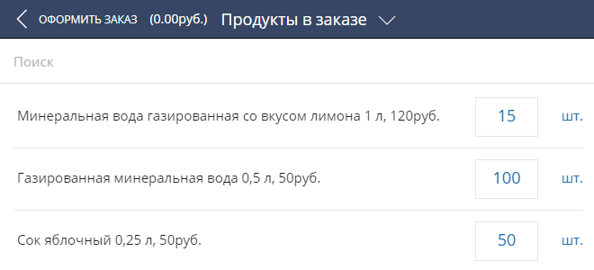
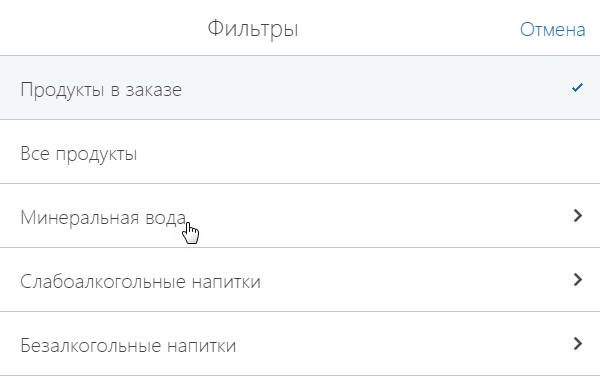
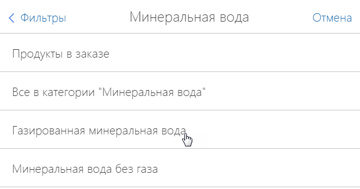

Функциональность Field Sales for Creatio позволяет фиксировать в системе действия торговых представителей непосредственно во время визита. Для этого используется мобильное приложение Creatio на устройстве торгового представителя. В качестве мобильного устройства оптимально использовать планшет. Для удобства работы рекомендуем использовать его в горизонтальном положении.
Выполнение действий торговых представителей фиксируется на детали Действия визита страницы визита. Например, согласно правилу визита торговый представитель должен выполнить чек-ин, провести презентацию, принять заказ и выполнить чек-аут.
Чтобы выполнить действие во время визита:
-
Откройте страницу визита.
-
На детали Действия визита установите переключатель напротив необходимого действия в позицию “Выполнено”.
Переключатель в позиции “Выполнено” подсвечивается голубым цветом.В результате действие на визите будет считаться выполненным. Вы можете завершить визит, только если были выполнены все обязательные действия. Чтобы выполнить обязательное действие, необходимо чтобы было выполнено предыдущее обязательное действие. В результате выполнения последнего обязательного действия состояние визита автоматически переводится в завершенное. Выполнение необязательного действия может быть пропущено.
Все действия торговых представителей во время визита могут выполняться в режиме offline. При работе в режиме offline наличие постоянного подключения к интернету не требуется. Необходимо периодически выполнять синхронизацию с основным приложением, чтобы изменения, внесенные пользователем на мобильном устройстве, были сохранены на сервере Creatio.
Чтобы выполнить синхронизацию с основным приложением:
-
Убедитесь, что ваше мобильное устройство подключено к интернету.
-
Перейдите в раздел Настройки мобильного приложения.
-
На открывшейся странице нажмите кнопку Синхронизация.
В результате в мобильном приложении отобразятся данные из основного приложения, а в основном приложении появятся данные, которые были созданы в мобильном приложении пользователя.
Показать презентацию
Если правилом визита предусмотрено проведение презентации, то выполните действие визита “Показ презентации” (Рис. 1). В результате на мобильном устройстве откроется файл Microsoft PowerPoint, который вы можете использовать при показе.
Принять заказ
Чтобы создать заказ, на детали Действия визита мобильного приложения выполните действие “Прием заказа” (Рис. 2).
В результате выполнения действия в системе автоматически будет создан заказ, связанный с текущим визитом и контрагентом, указанным в визите.
Чтобы добавить продукты в заказ:
-
На открывшейся в результате выполнения действия Прием заказа странице со списком продуктов, указанных в последнем заказе данного контрагента (Рис. 3), отобразите необходимые продукты из каталога с помощью быстрых фильтров. Подробнее о том, как это сделать, читайте в блоке “Найти продукты в каталоге”.
Рис. 3 — Страница продуктов в заказе -
Нажмите кнопку напротив необходимого продукта.
-
В открывшемся окне укажите количество продукта и нажмите кнопку Enter. При необходимости повторите данную процедуру для других продуктов.
Чтобы исключить продукт из заказа, укажите для него количество “0”. -
Перейдите по ссылке Оформить заказ страницы Продукты в заказе, которая находится в левом верхнем углу приложения.
В результате в системе будет создан заказ с указанными продуктами.
Найти продукты в каталоге
В мобильном приложении вы можете выполнять поиск продуктов, используя каталог продуктов. Список групп продуктов, который используется для поиска продуктов в мобильном приложении, соответствует каталогу продуктов, настроенному в разделе Продукты основного приложения.
Например, ваш каталог настроен по категориям и типам продуктов. Отобразим продукты с категорией “Минеральная вода” и типом “Газированная минеральная вода”:
-
Найдите деталь Продукты в мобильном приложении.
-
Перейдите по ссылке Продукты в заказе, которая находится в заголовке списка продуктов.
-
В открывшемся окне выберите необходимую категорию продукта, например, “Минеральная вода” (Рис. 4).
Рис. 4 — Выбор категории продукта -
В списке типов, относящихся к выбранной категории, выберите необходимый тип продукта, например, “Газированная минеральная вода” (Рис. 5).
Рис. 5 — Выбор типа продукта
В результате на детали отобразятся все доступные в системе продукты выбранного типа.
Чтобы выполнить поиск продуктов по названию, используйте строку поиска детали Продукты, которая находится вверху списка продуктов. Введите в строку поиска искомое значение. В результате на детали отобразятся все продукты, название которых отвечает условию поиска (Рис. 6).
Копировать продукты
Вы также можете осуществить фильтрацию продуктов путем их автоматического копирования из предыдущего заказа данной торговой точки. При добавлении визита в расписание торгового представителя на деталь Продукты будет автоматически добавлен список продуктов, указанных в последнем заказе этой торговой точки.
Выполнить мониторинг SKU
Если правилом визита предусмотрено проведение мониторинга изменения ассортимента товара (SKU), то выполните действие визита “Мониторинг SKU”. В результате откроется страница, на которой вы сможете зафиксировать остаток товаров и наличие выкладки в торговой точке (Рис. 7).
Также вы можете сделать при помощи мобильного устройства фото выкладки товара и прикрепить его к визиту. Для этого:
-
На странице активности нажмите кнопку Изменить.
-
Выберите деталь Файлы и примечания.
-
Нажмите кнопку .
-
На открывшейся странице вы можете выбрать сделанную заранее фотографию из галереи вашего мобильного устройства и прикрепить ее к активности. Также можно использовать действие Сделать фото. Откроется режим фотосъемки, и сохраненное изображение будет автоматически прикреплено на деталь Файлы и примечания.